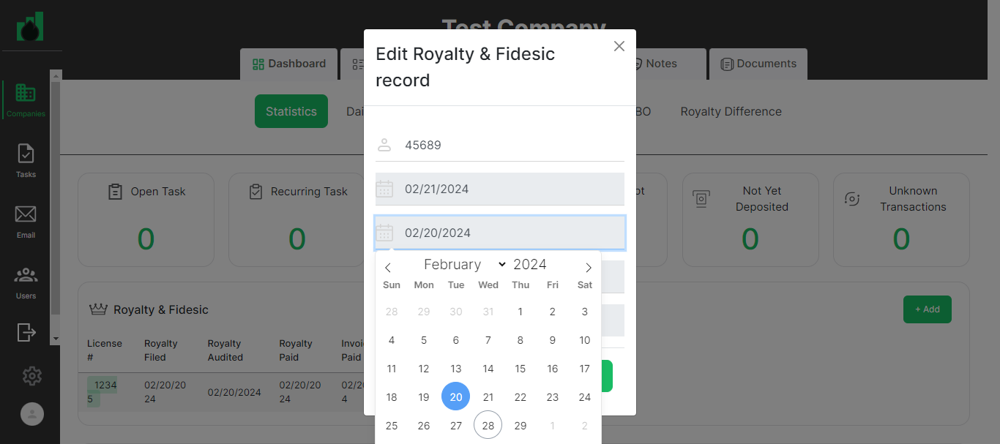
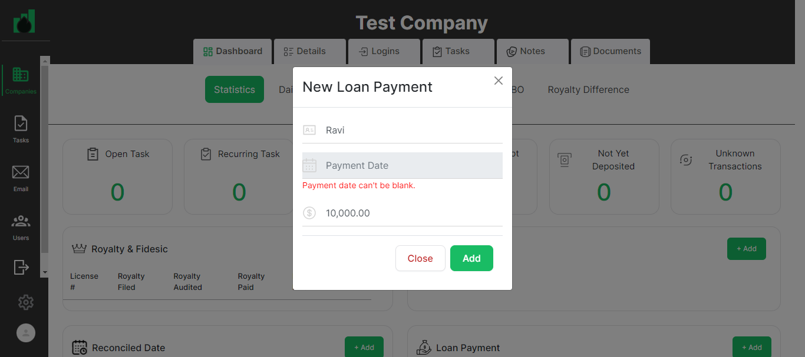
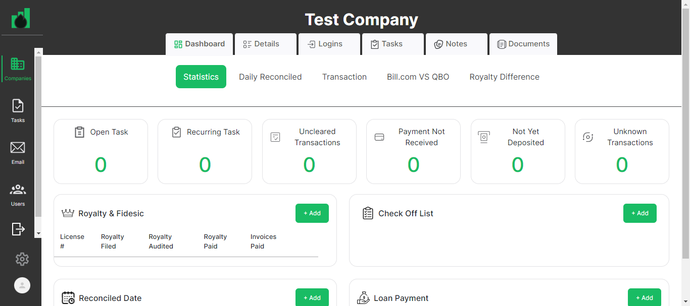

-
Companies Page Functionality
11:08:47 pm / 00:06:19:106 Fail
Companies Page Functionality
02.28.2024 11:08:47 pm 02.28.2024 11:15:06 pm 00:06:19:106 · #test-id=1Pass40. user should be on Statistics tab in the companyGiven User has already logged in to applicationusername password admin@ontrack.com Admin@12345 And User is on Companies page url "https://beta.cisin.com:4991/"When user should be able to select company in the company pageThen user should be on Statistics tab in the company"Statistics"Pass41. Royalty & Fidesic widget should be displayedGiven User has already logged in to applicationusername password admin@ontrack.com Admin@12345 And User is on Companies page url "https://beta.cisin.com:4991/"When user should be able to select company in the company pageThen "Royalty & Fidesic" widget should be displayedPass42. Add button should be displayedGiven User has already logged in to applicationusername password admin@ontrack.com Admin@12345 And User is on Companies page url "https://beta.cisin.com:4991/"When user should be able to select company in the company pageThen Add button should be displayedPass43. Create Royalty & Fidesic record title should be displayed on PopUpGiven User has already logged in to applicationusername password admin@ontrack.com Admin@12345 And User is on Companies page url "https://beta.cisin.com:4991/"When user should be able to select company in the company pageAnd user should be clicked on add button of Royalty & Fidesic recordThen "Create Royalty & Fidesic record" title should be displayedPass44. add button should be displayed on Royalty & Fidesic PopUpGiven User has already logged in to applicationusername password admin@ontrack.com Admin@12345 And User is on Companies page url "https://beta.cisin.com:4991/"When user should be able to select company in the company pageAnd user should be clicked on add button of Royalty & Fidesic recordThen add button should be displayed on Royalty & Fidesic PopUpPass45. close button should be displayed on Royalty & Fidesic PopUpGiven User has already logged in to applicationusername password admin@ontrack.com Admin@12345 And User is on Companies page url "https://beta.cisin.com:4991/"When user should be able to select company in the company pageAnd user should be clicked on add button of Royalty & Fidesic recordThen close button should be displayed on Royalty & Fidesic PopUpPass46. Licence number error message should be displayed on Royalty & Fidesic PopUpGiven User has already logged in to applicationusername password admin@ontrack.com Admin@12345 And User is on Companies page url "https://beta.cisin.com:4991/"When user should be able to select company in the company pageAnd user should be clicked on add button of Royalty & Fidesic recordAnd user should be clicked add button on Royalty & Fidesic PopUpThen user should be able to see the licence error message"License number can't be blank.License number is not a number"Pass47. user should be able to Create Royalty & Fidesic recordGiven User has already logged in to applicationusername password admin@ontrack.com Admin@12345 And User is on Companies page url "https://beta.cisin.com:4991/"When user should be able to select company in the company pageAnd user should be clicked on add button of Royalty & Fidesic recordAnd user should be able to enter all the fields of Royalty & Fidesic recordtitle royalty filed date royalty audit date royaly paid date royalty invoice date 12345 February 20, 2024 February 20, 2024 February 20, 2024 February 20, 2024 Then Royalty & Fidesic record should be displayed on Royalty & Fidesic widgetFail48. user should be able to update Royalty & Fidesic recordGiven User has already logged in to applicationusername password admin@ontrack.com Admin@12345 And User is on Companies page url "https://beta.cisin.com:4991/"When user should be able to select company in the company pageAnd user should be clicked on edit buttonAnd user should be able to update Royalty & Fidesic recordtitle royalty filed date royalty audit date royaly paid date royalty invoice date 45689 February 21, 2024 February 21, 2024 February 21, 2024 February 21, 2024 Then user should be able to see the update Royalty & Fidesic recordStep skippedAppHooks.ApplicationHooks.tearDown(io.cucumber.java.Scenario)48._user_should_be_able_to_update_Royalty_&_Fidesic_recordPass49. user should be able to delete Royalty & Fidesic recordGiven User has already logged in to applicationusername password admin@ontrack.com Admin@12345 And User is on Companies page url "https://beta.cisin.com:4991/"When user should be able to select company in the company pageAnd user should be able to delete Royalty & Fidesic recordPass50. user should be able to close Check Off List PopUpGiven User has already logged in to applicationusername password admin@ontrack.com Admin@12345 And User is on Companies page url "https://beta.cisin.com:4991/"When user should be able to select company in the company pageAnd user should be clicked on add button of check of listAnd user should be able to close Check Off List PopUpThen user should be close check off list popup successfullyPass51. User should see an validation message for NameGiven User has already logged in to applicationusername password admin@ontrack.com Admin@12345 And User is on Companies page url "https://beta.cisin.com:4991/"When user should be able to select company in the company pageAnd user should be clicked on add button of check of listAnd user shoudl be clicked on add button of check of list popupThen User should see an validation message for Name"Name can't be blank."Pass52. User should see an validation message for DateGiven User has already logged in to applicationusername password admin@ontrack.com Admin@12345 And User is on Companies page url "https://beta.cisin.com:4991/"When user should be able to select company in the company pageAnd user should be clicked on add button of check of listAnd user shoudl be clicked on add button of check of list popupThen User should see an validation message for Date"Date can't be blank."Pass53. User should be able to create Check Off List RecordGiven User has already logged in to applicationusername password admin@ontrack.com Admin@12345 And User is on Companies page url "https://beta.cisin.com:4991/"When user should be able to select company in the company pageAnd user should be clicked on add button of check of listAnd user should be able to enter all the fields of Check Off Listname date Ravi February 20, 2024 Then user should be able to see the check off list"Ravi"Pass54. user should be able to update Check Off List recordGiven User has already logged in to applicationusername password admin@ontrack.com Admin@12345 And User is on Companies page url "https://beta.cisin.com:4991/"When user should be able to select company in the company pageAnd user should be clicked on edit button of Check Off ListAnd user should be able to update Check Off List recordname date Janvi February 21, 2024 Then user should be able to see the update Check Off Listc record"Janvi"Pass55. user should be able to delete check off list recordGiven User has already logged in to applicationusername password admin@ontrack.com Admin@12345 And User is on Companies page url "https://beta.cisin.com:4991/"When user should be able to select company in the company pageAnd user should be able to delete check off list recordPass56. user should be able to close Reconciled Date PopUpGiven User has already logged in to applicationusername password admin@ontrack.com Admin@12345 And User is on Companies page url "https://beta.cisin.com:4991/"When user should be able to select company in the company pageAnd user should be clicked on add button of Reconciled DateAnd user should be able to close Reconciled Date PopUpThen user should be close Reconciled Date popup successfullyPass57. User should see an validation message for Account NameGiven User has already logged in to applicationusername password admin@ontrack.com Admin@12345 And User is on Companies page url "https://beta.cisin.com:4991/"When user should be able to select company in the company pageAnd user should be clicked on add button of Reconciled DateAnd user shoudl be clicked on add button of Reconciled Date popupThen User should see an validation message for Account Name"Account name can't be blank."Pass58. User should be able to create Reconciled Dates recordGiven User has already logged in to applicationusername password admin@ontrack.com Admin@12345 And User is on Companies page url "https://beta.cisin.com:4991/"When user should be able to select company in the company pageAnd user should be clicked on add button of Reconciled DateAnd User should be able to create Reconciled Dates recordAccountName report date auditor date ICICI0000456123 February 20, 2024 February 20, 2024 Then user should be able to see the Reconciled Dates record"ICICI0000456123"Pass59. User should be able to Edit Reconciled Dates recordGiven User has already logged in to applicationusername password admin@ontrack.com Admin@12345 And User is on Companies page url "https://beta.cisin.com:4991/"When user should be able to select company in the company pageAnd user should be clicked on edit button of Reconciled DateAnd User should be able to edit Reconciled Dates recordAccountName report date auditor date ICICI0000356214 February 21, 2024 February 21, 2024 Then user should be able to see the update Reconciled Dates record"ICICI0000356214"Pass60. user should be able to delete Reconciled Date recordGiven User has already logged in to applicationusername password admin@ontrack.com Admin@12345 And User is on Companies page url "https://beta.cisin.com:4991/"When user should be able to select company in the company pageAnd user should be able to delete Reconciled Date recordPass61. user should be able to close New Loan Payment PopUpGiven User has already logged in to applicationusername password admin@ontrack.com Admin@12345 And User is on Companies page url "https://beta.cisin.com:4991/"When user should be able to select company in the company pageAnd user should be clicked on add button of New Loan PaymentAnd user should be able to close New Loan Payment PopUpThen user should be close New Loan Payment popup successfullyPass62. User should see an validation message for Loan NameGiven User has already logged in to applicationusername password admin@ontrack.com Admin@12345 And User is on Companies page url "https://beta.cisin.com:4991/"When user should be able to select company in the company pageAnd user should be clicked on add button of New Loan PaymentAnd user should be clicked on add button of New Loan Payment popupThen User should see an validation message for Loan Name"Loan name can't be blank."Pass63. User should see an validation message for Payment DateGiven User has already logged in to applicationusername password admin@ontrack.com Admin@12345 And User is on Companies page url "https://beta.cisin.com:4991/"When user should be able to select company in the company pageAnd user should be clicked on add button of New Loan PaymentAnd user should be clicked on add button of New Loan Payment popupThen User should see an validation message for Payment Date"Payment date can't be blank."Pass64. User should see an validation message for AmountGiven User has already logged in to applicationusername password admin@ontrack.com Admin@12345 And User is on Companies page url "https://beta.cisin.com:4991/"When user should be able to select company in the company pageAnd user should be clicked on add button of New Loan PaymentAnd user should be clicked on add button of New Loan Payment popupThen User should see an validation message for Amount"Amount can't be blank."Fail65. User should be able to create loan payment RecordGiven User has already logged in to applicationusername password admin@ontrack.com Admin@12345 And User is on Companies page url "https://beta.cisin.com:4991/"When user should be able to select company in the company pageAnd user should be clicked on add button of New Loan PaymentAnd user should be able to enter all the fields of new loan paymentloan name payment date loan amount Ravi February 20, 2024 10000 Then user should be able to see the loan paymentAppHooks.ApplicationHooks.tearDown(io.cucumber.java.Scenario)65._User_should_be_able_to_create_loan_payment_RecordFail66. User should be able to edit loan payment RecordGiven User has already logged in to applicationusername password admin@ontrack.com Admin@12345 And User is on Companies page url "https://beta.cisin.com:4991/"When user should be able to select company in the company pageAnd user should be clicked on edit button of New Loan PaymentAnd user should be able to edit all the fields of new loan paymentloan name payment date loan amount Janvi February 21, 2024 20000 Step skippedThen user should be able to see the edit loan paymentStep skippedAppHooks.ApplicationHooks.tearDown(io.cucumber.java.Scenario)66._User_should_be_able_to_edit_loan_payment_Record Fail67. user should be able to delete Loan Payment recordGiven User has already logged in to application
Fail67. user should be able to delete Loan Payment recordGiven User has already logged in to applicationusername password admin@ontrack.com Admin@12345 And User is on Companies page url "https://beta.cisin.com:4991/"When user should be able to select company in the company pageAnd user should be able to delete Loan payment recordAppHooks.ApplicationHooks.tearDown(io.cucumber.java.Scenario)67._user_should_be_able_to_delete_Loan_Payment_record
-
org.openqa.selenium.NoSuchElementException
2 tests
org.openqa.selenium.NoSuchElementException
2 failedStatus Timestamp TestName Fail 23:14:16 pm And user should be clicked on edit button of New Loan Payment Companies Page Functionality.66. User should be able to edit loan payment Record.And user should be clicked on edit button of New Loan PaymentFail 23:14:46 pm And user should be able to delete Loan payment record Companies Page Functionality.67. user should be able to delete Loan Payment record.And user should be able to delete Loan payment record -
org.openqa.selenium.ElementClickInterceptedException
2 tests
org.openqa.selenium.ElementClickInterceptedException
2 failedStatus Timestamp TestName Fail 23:10:36 pm And user should be able to update Royalty & Fidesic record Companies Page Functionality.48. user should be able to update Royalty & Fidesic record.And user should be able to update Royalty & Fidesic recordFail 23:14:05 pm Then user should be able to see the loan payment Companies Page Functionality.65. User should be able to create loan payment Record.Then user should be able to see the loan payment
Started
Feb 28, 2024 11:08:46 pm
Ended
Feb 28, 2024 11:15:06 pm
Features Passed
0
Features Failed
1
Features
Scenarios
Steps
Timeline